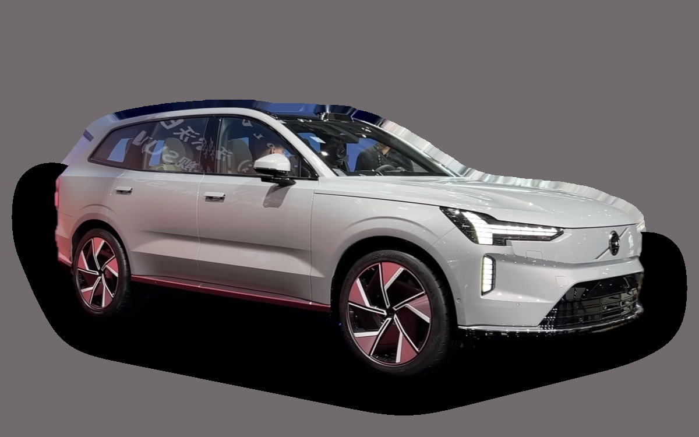

Vad kostar en Volvo EX90 per månad?
En Volvo EX90 från 2026 kostar cirka 9 775 kr i månaden, allt inräknat.
9 775 krper månad, årsmodell 2026
871 100 krpris, årsmodell 2026
871 100 krnypris från
Dprisvärdhetsbetyg (2026)

_front_view.png){kind=link}
Månadskostnad per årsmodell
| Årsmodell | Version i beräkningen | Pris | Per månad | Betyg |
|---|---|---|---|---|
| 2026 | Twin Motor 408, Plus | 871 100 kr | 9 775 kr | D |
Räknat på 5 års ägande och 1 250 mil per år, med bränslepriser från 2026-10-22. Månadskostnaden innehåller värdeminskning, drivmedel, service och reparationer, försäkring och fordonsskatt.
Så fördelas kostnaden för en 2026:a
- Värdeminskning: 7 872 kr/mån
- Drivmedel: 522 kr/mån
- Service och reparationer: 315 kr/mån
- Försäkring: 1 037 kr/mån
- Fordonsskatt: 30 kr/mån
Begagnatpriser i annonser
| Årsmodell | Medianpris | Annonser | Typiskt miltal |
|---|---|---|---|
| 2025 | 789 500 kr | 35 | 2 400 mil |
Medianpriset i svenska annonser per årsmodell i oktober 2026 (källa: Blocket). Annonspriser är utgångspriser, och slutpriset kan bli lägre.
Motorer och versioner
| Motor | Drivmedel | Effekt | 0–100 km/h | Förbrukning (WLTP) | Räckvidd | Årsmodeller | Pristillägg |
|---|---|---|---|---|---|---|---|
| Twin Motor 408 | El | 408 hk | 5,9 s | 20,5 kWh/100 km | 600 km | från 2025 | – |
| Twin Motor Performance 517 | El | 517 hk | 4,9 s | 21 kWh/100 km | 580 km | från 2025 | +54 000 kr |
- Utrustning: Plus, Ultra (+108 900 kr)
Fakta
- Kaross
- SUV
- Årsmodeller
- sedan 2025
- Nypris från
- 871 100 kr
- Bagage
- 655 liter
- Euro NCAP
- 5 av 5 stjärnor
- Nybilsgaranti
- 3 år
- Driftsäkerhet
- 3 av 5
- Helförsäkring, uppskattning
- 14 800 kr/år
- Service, uppskattning
- 3 200 kr/år
Fördelar och nackdelar
Fördel
Sju säten, lång räckvidd och mycket säkerhetsteknik.
Nackdel
Mycket dyr och har haft mjukvaruproblem.
Liknande bilar
 Polestar 310 036 kr/mån som 2026:a
Polestar 310 036 kr/mån som 2026:a Porsche Macan10 079 kr/mån som 2026:a
Porsche Macan10 079 kr/mån som 2026:a Land Rover Defender9 358 kr/mån som 2023:a
Land Rover Defender9 358 kr/mån som 2023:a Porsche Cayenne9 025 kr/mån som 2023:a
Porsche Cayenne9 025 kr/mån som 2023:a Toyota Land Cruiser8 757 kr/mån som 2026:a
Toyota Land Cruiser8 757 kr/mån som 2026:a Mercedes-Benz GLE8 566 kr/mån som 2023:a
Mercedes-Benz GLE8 566 kr/mån som 2023:a
Uppdaterad 2026-10-29 · annonsdata okt 2026